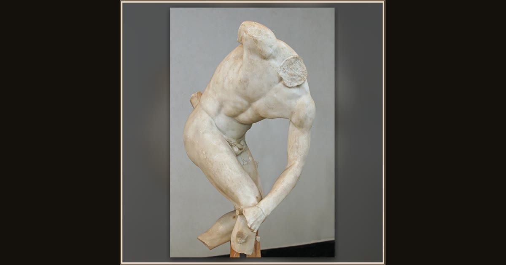

Discobolus of Castelporziano (Discus Thrower)
Roman copy after Myron · Hadrianic copy (117–138 CE) after a Greek bronze · Museo Nazionale Romano – Palazzo Massimo alle Terme · Rome, Italy
This marble discus-thrower, carved after a famous Greek bronze, shows the very games Odysseus joined among the Phaeacians — where he out-threw them all. Explore its place in Book VIII of the Odyssey.